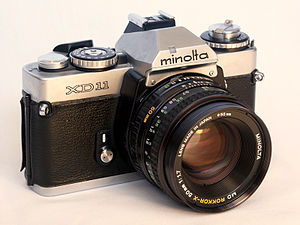
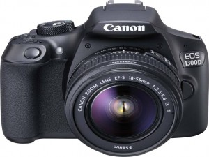

PHOTOGRAPHY
Photography is the art, application and practice of creating durable images by recording light or other electromagnetic radiation, either electronically by means of an image sensor, or chemically by means of a light-sensitive material such as photographic film. It is employed in many fields of science, manufacturing (e.g., photolithography), and business, as well as its more direct uses for art, film and video production, recreational purposes, hobby, and mass communication.[1]
Typically, a lens is used to focus the light reflected or emitted from objects into a real image on the light-sensitive surface inside a camera during a timed exposure. With an electronic image sensor, this produces an electrical charge at each pixel, which is electronically processed and stored in a digital image file for subsequent display or processing. The result with photographic emulsion is an invisible latent image, which is later chemically "developed" into a visible image, either negative or positive depending on the purpose of the photographic material and the method of processing. A negative image on film is traditionally used to photographically create a positive image on a paper base, known as a print, either by using an enlarger or by contact printing.
The first permanent photoetching was an image produced in 1822 by the French inventor Nicéphore Niépce, but it was destroyed in a later attempt to make prints from it.[20] Niépce was successful again in 1825. In 1826 or 1827, he made the View from the Window at Le Gras, the earliest surviving photograph from nature (i.e., of the image of a real-world scene, as formed in a camera obscura by a lens).
n France, Hippolyte Bayard invented his own process for producing direct positive paper prints and claimed to have invented photography earlier than Daguerre or Talbot.[25]
British chemist John Herschel made many contributions to the new field. He invented the cyanotype process, later familiar as the "blueprint". He was the first to use the terms "photography", "negative" and "positive". He had discovered in 1819 that sodium thiosulphate was a solvent of silver halides, and in 1839 he informed Talbot (and, indirectly, Daguerre) that it could be used to "fix" silver-halide-based photographs and make them completely light-fast. He made the first glass negative in late 1839.
n the March 1851 issue of The Chemist, Frederick Scott Archer published his wet plate collodion process. It became the most widely used photographic medium until the gelatin dry plate, introduced in the 1870s, eventually replaced it. There are three subsets to the collodion process; the Ambrotype (a positive image on glass), the Ferrotype or Tintype (a positive image on metal) and the glass negative, which was used to make positive prints on albumen or salted paper.
Many advances in photographic glass plates and printing were made during the rest of the 19th century. In 1891, Gabriel Lippmann introduced a process for making natural-color photographs based on the optical phenomenon of the interference of light waves.
SLR

A single-lens reflex camera (SLR) is a camera that typically uses a mirror and prism system (hence "reflex" from the mirror's reflection) that permits the photographer to view through the lens and see exactly what will be captured. With twin lens reflex and rangefinder cameras, the viewed image could be significantly different from the final image. When the shutter button is pressed on most SLRs, the mirror flips out of the light path, allowing light to pass through to the light receptor and the image to be captured.
DSLR

A digital single-lens reflex camera (digital SLR or DSLR) is a digital camera that combines the optics and the mechanisms of a single-lens reflex camera with a digital imaging sensor, as opposed to photographic film. The reflex design scheme is the primary difference between a DSLR and other digital cameras. In the reflex design, light travels through the lens, then to a mirror that alternates to send the image to either the viewfinder or the image sensor.
Canon -Canon is a Japanese multinational corporation specializing in the manufacture of imaging and optical products, including cameras, camcorders, photocopiers, steppers, computer printers and medical equipment. It's headquartered in Ōta, Tokyo, Japan.[3]
Canon has a primary listing on the Tokyo Stock Exchange and is a constituent of the TOPIX index. It has a secondary listing on the New York Stock Exchange.
Nikon -Nikon Corporation , also known just as Nikon, is a Japanese multinational corporation headquartered in Tokyo, Japan, specializing in optics and imaging products.
Sony -Corporation is the electronics business unit and the parent company of the Sony Group, which is engaged in business through its four operating components: electronics (AV, IT & communication products, semiconductors, video games, network services and medical business), motion pictures (movies and TV shows), music (record labels and music publishing) and financial services (banking and insurance).